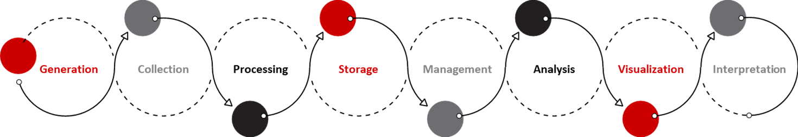

NC TraCS has partnered with the NC State Data Science and AI Academy to provide timely and targeted support to clinical researchers using electronic health record (EHR) data.
Learn to create effective visualizations with R and Python
View WorkshopWe engage with the entire data lifecycle, but focus on processing, management, analysis, visualization, and interpretation.

All of our guides use synthetic data that is very similar to real EHR data.